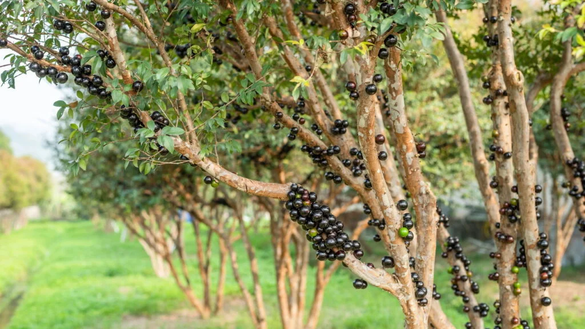
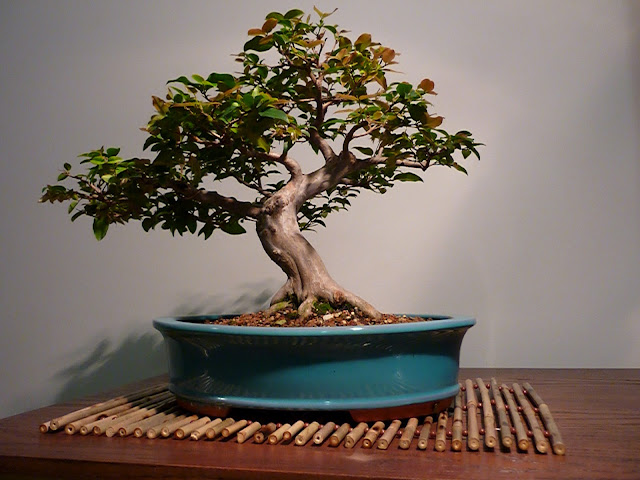
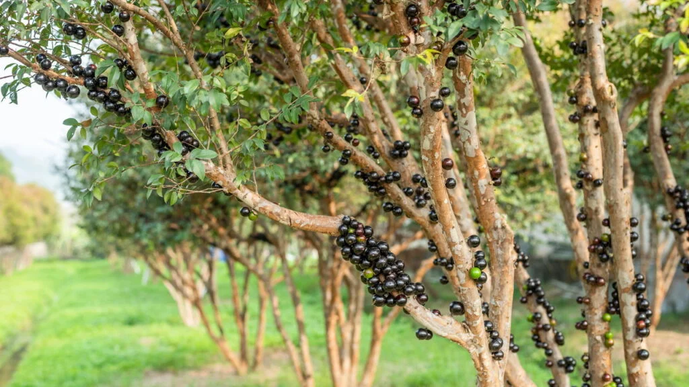
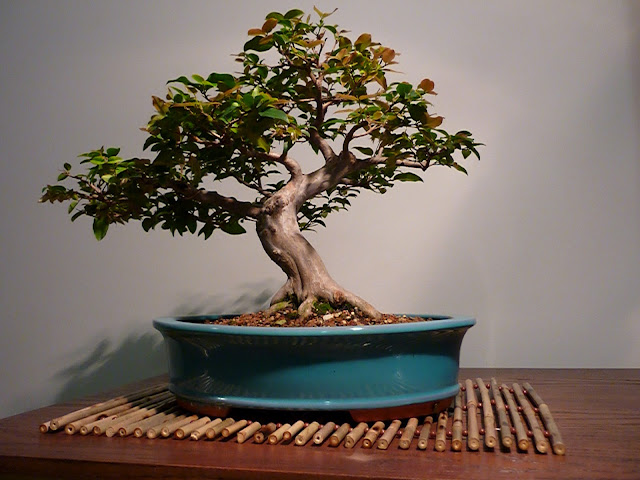

🌱 Raízes que atravessam o tempo
Eu aprendi, ao longo de uma vida inteira na terra, que tudo o que cresce de verdade precisa de paciência. O bonsai é uma lembrança disso. Ele não é apenas uma planta pequena — é uma lição silenciosa sobre o tempo.
A jaboticabeira é árvore de raízes firmes e frutos doces. Representa longevidade, persistência e a beleza que só vem com os anos. Entendi que assim também é a família: nasce pequena, cresce devagar, cria raízes fortes e floresce na união.
Este bonsai é mais do que uma lembrança — é um pedaço de história semeada por, decicado a você com amor. Que ele leve até você um pouco da calma da roça, do cheiro de terra molhada e do tempo que não tem pressa.
🍃 Como cuidar do seu bonsai de jaboticabeira
Cuidar de um bonsai é como cuidar de uma amizade: requer presença e atenção. Siga estas orientações simples e ele crescerá bonito, forte e cheio de vida:
- 🌤️ Mantenha o bonsai em local iluminado, com sol suave pela manhã.
- 💧 Regue sempre que o solo estiver levemente seco — nem demais, nem de menos.
- 🌿 Adube a cada dois meses com NPK ou matéria orgânica leve, como húmus de minhoca.
- ✂️ Pode os brotos que crescerem demais, mantendo o formato harmonioso.
- 💨 Deixe o ar circular: bonsais gostam de ambientes ventilados.
 


